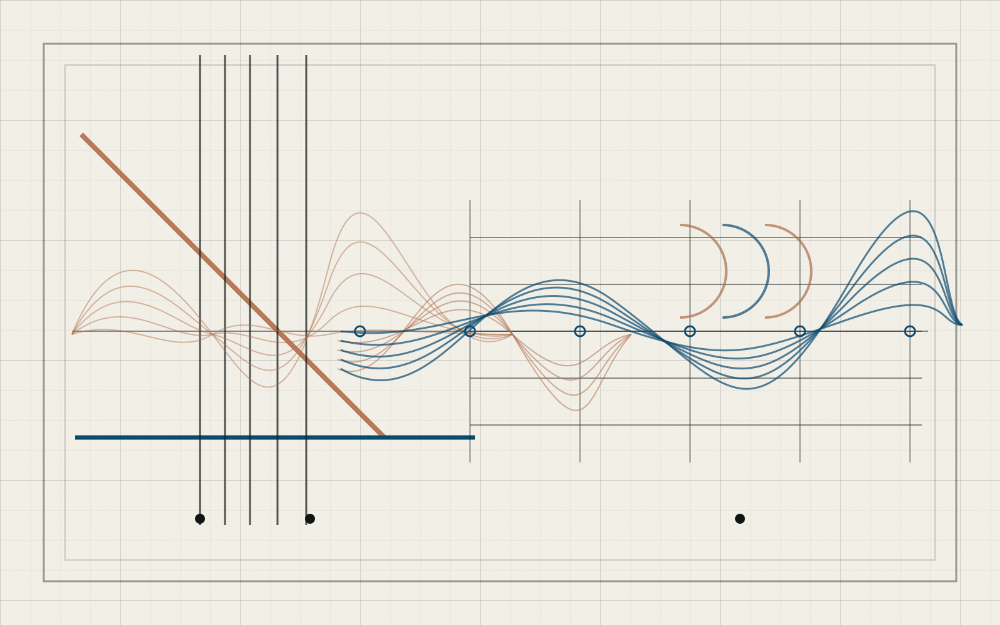

Listen
Model musical context, nuance, timing, and intention as living signals.
Music intelligence lab
Fermata is a research lab for musical intelligence. We believe the next frontier in music AI is not better outputs, but systems that can listen, adapt, teach, and collaborate the way musicians do with one another.

Model musical context, nuance, timing, and intention as living signals.
Learn within the constraints of human expression, not around them.
Begin with piano as a deep, bounded environment for musical intelligence.